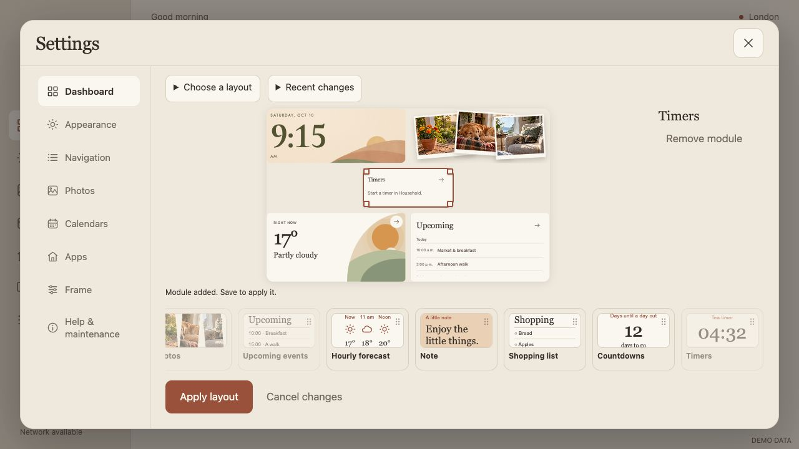
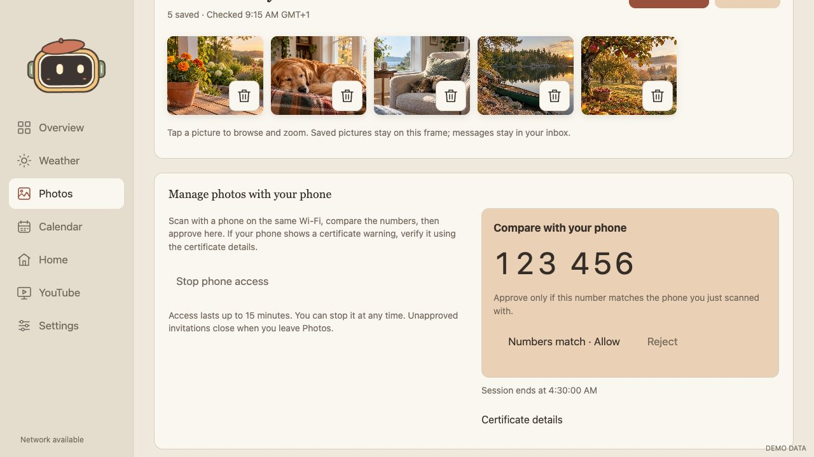

SKYLIT · 13 OCTOBER 2026
Settings, dashboard and photo access
Grouped settings, a persistent editing sidebar, the bottom widget tray, predictable placement, stable photos and automatic phone invitations.
Implementation and browser verification complete. The signed APK is ready; installation and native service acceptance await the frame connection.
Settings that read as grouped choices
Navigation now groups the optional pages in one card, with consistent rows and right-aligned switches. Frame groups City & time, Daily routine and Software updates, with chevrons for destinations.
Frame: a clear group of destinations
Related everyday controls share one card; Android recovery remains separately grouped below.
Dashboard: navigation stays in place
The Settings sidebar stays visible. Widget previews form a horizontally scrolling tray beneath the canvas; selected-widget settings remain on the right. On short screens the editor scrolls rather than shrinking the canvas indefinitely.
A timer fits the gap you made
Timers and countdowns can occupy a three-row gap. Placement searches for a valid nearby slot around your pointer, and highlights its exact footprint before release. The browser check verifies that the saved position and size equal the highlighted target. There remains one widget of each type—not a four-widget limit.
Photo selection and dragging no longer rebuild images
The preview was replacing photo content and reattaching nodes during unrelated edits. It now keeps image elements mounted through selection and movement, and refreshes when actual photo content changes. The regression check observes zero removed images and preserves the original image nodes.

Phone curation belongs in Photos
The QR invitation appears automatically while Photos is open. Expired invitations renew without a Start step. Matching-number approval stays on the frame; approved access expires after at most 15 minutes. Stop phone access revokes access and pauses pairing. Unapproved invitations close when you leave Photos. These screenshots use a mocked listener and a synthetic address.
Approve the matching number
The phone cannot access pictures until you compare the number and approve on the frame. Certificate details remain available for verifying the local HTTPS certificate.

YouTube and Google Home: direct service views
The Android tabs now open their separate service WebView alongside Skylit’s sidebar. The YouTube website-mode dropdown is removed. Remote pages still receive no Skylit native bridge, and exact HTTPS host allowlists remain enforced. Fullscreen video retains a return control.
Device verification remains outstanding. The paired wireless connection refused the connection, and the configured frame was not connected over USB. Browser tests verify native dispatch and sidebar sizing arguments; the APK compiles and is signed. They do not establish sign-in, playback, fullscreen behavior or real Home control. The desktop preview retains a browser-opening fallback because the full sites cannot be embedded as ordinary iframes.
Responsive evidence
The primary frame review is 1280×720 CSS pixels, corresponding to the frame’s 1920×1080 physical display. The desktop capture above is a separate 1920×1080 CSS viewport. Narrow mode retains category navigation and a scaled landscape canvas.
Verification and handoff
- 91 Node tests and 19 Python tests passed.
- TypeScript check, 13 Settings workflow checks, React first-run and pairing checks passed.
- Four-size QR acceptance, approval/rejection, focus stability and session cleanup passed using synthetic state.
- Photo image stability and exact timer drop placement passed.
- Normal signed APK is ready at
dist/skylit.apk; household configuration is not embedded. - Source, Git-history and APK public-data checks: zero findings.
- Physical installation, camera scanning, Home control and YouTube playback remain unverified.
All imagery in this report uses synthetic preview data. No device screenshots or household credentials are included. Changes are in the working tree; this pass has not been published.